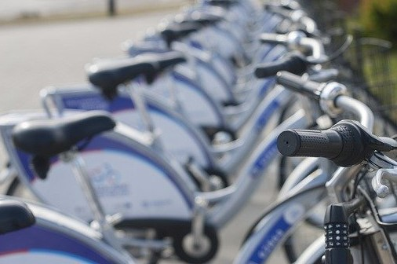

Welcome on my website dedicated City Bike Lublin Project

The Python City Bike Lublin Project was created to give practical advice on standard Python tools for data analysis, using real data.
This project will help you understand how to use Pandas and Matplotlib to obtain information of interest to you.
What you will learn: